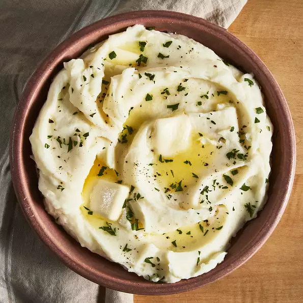

Mashed Potatoes

A basic but delicious mashed potatoes recipe
This recipe will leave your stomach satisfied! Not to hard to whip up,
but smashes the taste buds with a taste and feel that will remind you of
the mashed potatoes you had at Thanksgiving when you were a kid. This recipe
will yield four servings and should take you less than an hour to make.
Ingredients
- 2 pounds of baking potatoes, peeled and quartered
- 2 tablespoons of butter
- 1 cup of milk
- salt and pepper to taste
Steps
- Bring a pot of salted water to a boil.
Add potatoes and cook until tender but still firm, about 15 minutes; drain.
- In a small saucepan heat butter and milk over low heat until butter is melted. Using a potato masher or electric beater,
slowly blend milk mixture into potatoes until smooth and creamy.
Season with salt and pepper to taste. Enjoy!